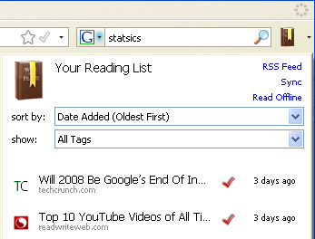
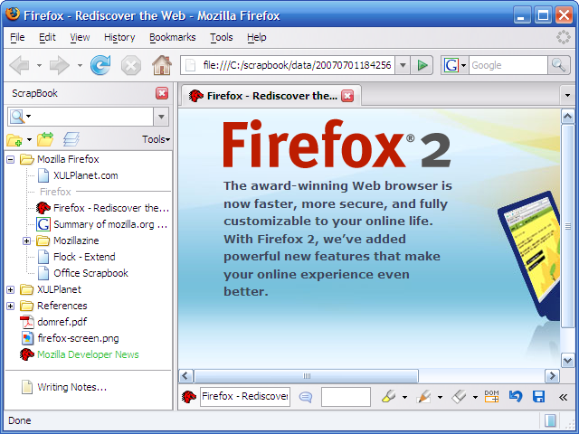

@firefox
我觉得知识管理有这么几个环节：接触/采集、消化/去芜存菁、存储和再创造，前面这几个环节都是工具可以派上
用场的地方。在前端（采集和消化阶段），我的工具主要有两个：Firefox和手机（生活中学道的另说，而现在系统
性地看书也比较少）; 在后端（存储和再创造阶段），我用的工具主要是Firefox和Evernote（也用过一段Emacs里
面的org-mode）。
Read It Later(现在已经改名为Pocket)是我常用的一个工具。它是个"稍后阅读”服务，意即将网址保存到一个网
络列表，供有合适时间时再来一个个消灭。它有一个不错的Firefox扩展 ，也有iOS和Android客户端，这样的话，
我可以几乎随时将需要”稍后详读“的网址添加到列表，又几乎随时可以开始阅读。所以，这个工具我用作了“知
识管理流水线”的中间环节[fn:1]。
Read It Later的Firefox扩展和iOS/Android客户端共有的功能:
Read It Later的Firefox扩展还有以下一些功能:

另外，它的文本版本是通过RIL服务端提取的，有时候可以作为获取blogspot之类网站上文章内容的后备方法（比如
在公司没法fan墙的时候）。
参考:
浏览器书签*结合上同步的能力*，就可以用来记录知识了。你可以将一些内容按目录归类，你可以在书签里搜索。
这就是个知识库了。
相对Google Chrome浏览器，Firefox的书签有些更强的地方:
不过对于“知识管理”这个话题而言，Firefox的书签还有几点不爽的地方:
首先肯定得说Evernote Web Clipper 了，你可以用它来抓取网页内容到你的Evernote 笔记本里去。
上面说到的QuickFox Notes也支持与Evernote的导入导出。
如果你有Google Reader, Twitter等网络服务上的内容需要导入Evernote的话，还是建议采用ifttt 这样的自动服
务。这倒不在本文说的Firefox 扩展范围内了，有兴趣的可以读一下 IFTTT与Google+是什么？ifttt怎么玩？ — 邓斌博客 这篇文章。
首推Scrapbook Plus 这个扩展，你可以撷取网页并添加备注。与Evernote不同的是，它还可以沿着页面里的链接进
行爬取，而且每次撷取的内容都可以很好地保持网页原貌（Evernote抓取的内容显示出来还是有点怪）。

抓取之后，用户还可以进行一些简单的编辑，比如用6种不同的格式刷来标记一些需要关注的地方，页面上添加多个
即时帖，用DOM橡皮擦删掉不想看见的区块（比如广告/边栏）。如果需要功能更强的编辑，你可以用[[https://addons.mozilla.org/zh-CN/firefox/addon/edit-and-note/?src=search][Edit and
Note]] 这个扩展或者干脆外部编辑器。
除了抓取，你也可以新建便笺，在里面记录一些内容。虽然在存储上Scrapbook Plus会把它作为一个网页看待，但
只能输入纯文本内容，这算是个缺点:-(。
由于每次抓取的内容以独立文件的形式保存，所以给很多第三方工具带来了可能性：
[fn:1] 见 【创意锦囊系列之五】为什么我要的‘个人知识仓库’还不来？ 。 P.S. 这篇文章是前年看见
的，但我觉得去年出现的ifttt 已经可以将这条流水线串联起来了。
# -*- fill-column:100 -*-
| floatnotes.png | 55.2kb | |
| openbook.png | 86.8kb | |
| quickfoxnotes.png | 50.6kb | |
| read-it-later.png | 41.8kb | |
| scrapbook.png | 110kb |
{kind=link}
{kind=link}
{kind=link}
{kind=link}
{kind=link}